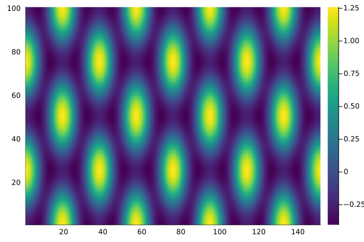
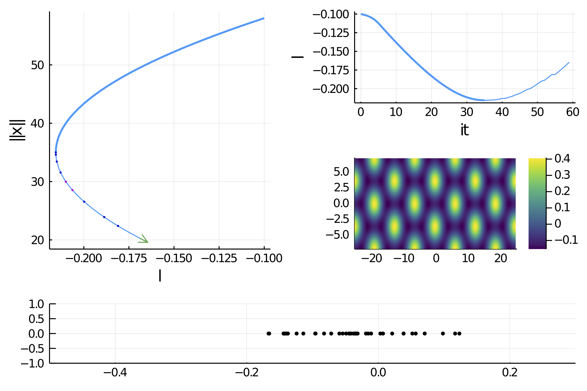
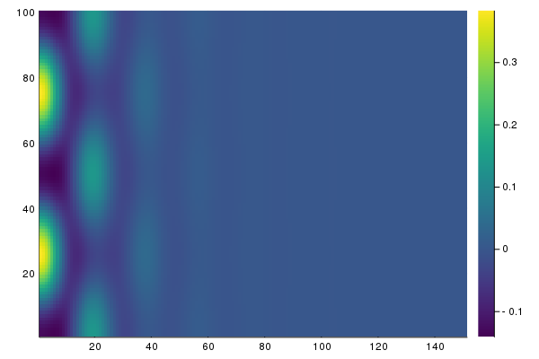
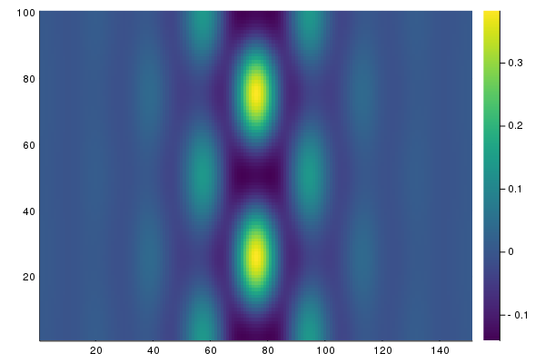
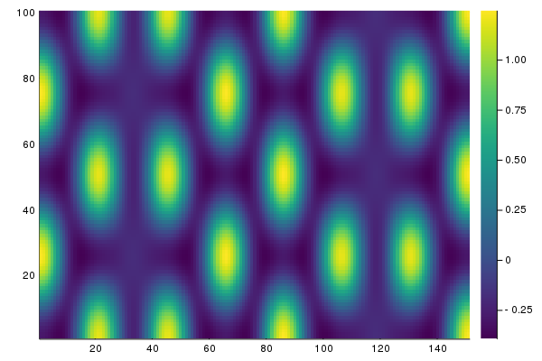
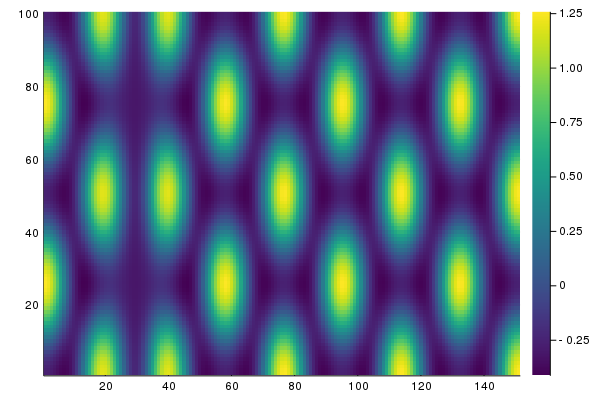
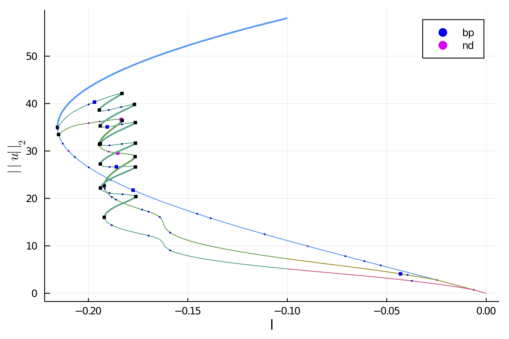
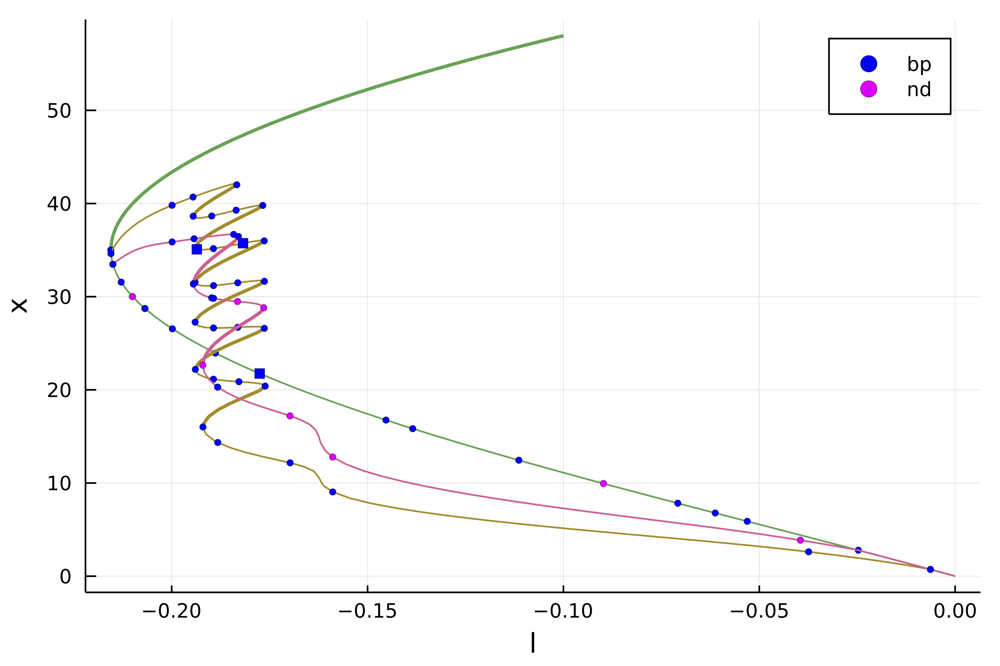

🟡 2d Swift-Hohenberg equation: snaking, finite differences
We study the following PDE
\[-(I+\Delta)^2 u+l\cdot u +\nu u^2-u^3 = 0\]
with Neumann boundary conditions. The full example is in the file example/SH2d-fronts.jl. This example is also treated in the MATLAB package pde2path. We use a Sparse Matrix to express the operator $L_1=(I+\Delta)^2$.
using BifurcationKit, Plots, SparseArraysimport LinearAlgebra: I, normconst BK = BifurcationKit# helper function to plot solutionheatmapsol(x) = heatmap(reshape(x,Nx,Ny)',color=:viridis)heatmapsol!(x; k...) = heatmap!(reshape(x,Nx,Ny)';color=:viridis, k...)Nx = 151Ny = 100lx = 4*2pily = 2*2pi/sqrt(3)function Laplacian2D(Nx, Ny, lx, ly) hx = 2lx/Nx hy = 2ly/Ny D2x = spdiagm(0 => -2ones(Nx), 1 => ones(Nx-1), -1 => ones(Nx-1) ) / hx^2 D2y = spdiagm(0 => -2ones(Ny), 1 => ones(Ny-1), -1 => ones(Ny-1) ) / hy^2 D2x[1,1] = -1/hx^2 D2x[end,end] = -1/hx^2 D2y[1,1] = -1/hy^2 D2y[end,end] = -1/hy^2 D2xsp = sparse(D2x) D2ysp = sparse(D2y) A = kron(sparse(I, Ny, Ny), D2xsp) + kron(D2ysp, sparse(I, Nx, Nx)) return A, D2xendLaplacian2D (generic function with 1 method)We also write the functional and its Jacobian which is a Sparse Matrix
function F_sh(u, p) (;l, ν, L1) = p return -L1 * u .+ (l .* u .+ ν .* u.^2 .- u.^3)endfunction dF_sh(u, p) (;l, ν, L1) = p return -L1 .+ spdiagm(0 => l .+ 2 .* ν .* u .- 3 .* u.^2)end# we compute the differentialsd2F_sh(u, p, dx1, dx2) = (2 .* p.ν .* dx2 .- 6 .* dx2 .* u) .* dx1d3F_sh(u, p, dx1, dx2, dx3) = (-6 .* dx2 .* dx3) .* dx1d3F_sh (generic function with 1 method)We first look for hexagonal patterns. This is done with
X = -lx .+ 2lx/(Nx) * collect(0:Nx-1)Y = -ly .+ 2ly/(Ny) * collect(0:Ny-1)# initial guess for hexagonssol0 = [(cos(x) + cos(x/2) * cos(sqrt(3) * y/2) ) for x in X, y in Y]sol0 .= sol0 .- minimum(vec(sol0))sol0 ./= maximum(vec(sol0))sol0 = sol0 .- 0.25sol0 .*= 1.7# define parameters for the PDEΔ, = Laplacian2D(Nx, Ny, lx, ly);L1 = (I + Δ)^2;par = (l = -0.1, ν = 1.3, L1);# Bifurcation Problemprob = BifurcationProblem(F_sh, vec(sol0), par, (@optic _.l); J = dF_sh, plot_solution = (x, p; kwargs...) -> (heatmapsol!(x; label="", kwargs...)), record_from_solution = (x, p; k...) -> (n2 = norm(x), n8 = norm(x, 8)), issymmetric = true, d2F = d2F_sh, d3F = d3F_sh)# newton corrections of the initial guessoptnewton = NewtonPar(verbose = true, tol = 1e-8, max_iterations = 20)sol_hexa = @time BK.solve(prob, Newton(), optnewton)NonLinearSolution{Vector{Float64}, BifurcationProblem{BifFunction{typeof(Main.F_sh), BifurcationKit.var"#162#164"{typeof(Main.F_sh)}, Nothing, Nothing, typeof(Main.dF_sh), Nothing, Nothing, typeof(Main.d2F_sh), Nothing, typeof(Main.d3F_sh), Nothing, Float64, BifurcationKit.Jet{Float64, Nothing, BifurcationKit.AutoDiff, BifurcationKit.FiniteDifferences, Nothing, Nothing, BifurcationKit.AutoDiff, Nothing, Nothing, Nothing, Nothing, Nothing, Nothing, Nothing, Nothing, Nothing, Nothing, Nothing, Nothing, Nothing, Nothing, Nothing, Nothing, Nothing, Nothing, Nothing, Nothing, Nothing, Nothing, Nothing}}, Vector{Float64}, @NamedTuple{l::Float64, ν::Float64, L1::SparseArrays.SparseMatrixCSC{Float64, Int64}}, PropertyLens{:l}, Main.var"#4#8", Main.var"#6#9", typeof(BifurcationKit.save_solution_default), typeof(BifurcationKit.update_default)}, Vector{Float64}, Int64}([-0.2676318368347582, -0.2819508046473875, -0.3079031271710653, -0.3404220279478643, -0.37258926897029726, -0.39627026641081653, -0.40276114666498797, -0.3834475080895921, -0.3305880458892222, -0.23838085795816594 … -0.2383808575779124, -0.33058804569095807, -0.38344750802749616, -0.4027611466887988, -0.39627026647430436, -0.37258926903687656, -0.34042202799366617, -0.3079031271858182, -0.28195080463331473, -0.26763183680366787], ┌─ Bifurcation problem with uType Vector{Float64}
├─ Inplace: false
├─ Dimension: 15100
├─ Symmetric: true
└─ Parameter: l, [173.91081387402477, 5046.503242335292, 1487.8453969712814, 435.2934599419263, 125.59783690139939, 35.51195898336262, 9.544668266513503, 2.176338430851776, 0.33503137281104206, 0.07725874815447939, 0.0074767271919087405, 7.950459535048754e-5, 8.841342345772113e-9], true, 12, 12)with sol_hexa being
heatmapsol(sol_hexa.u)
Continuation and bifurcation points
We can now continue this solution as follows. We want to detect bifurcations along the branches. We thus need an eigensolver. However, if we use an iterative eigensolver, like eig = EigArpack(), it has trouble computing the eigenvalues. One can see that using
# compute the jacobianJ0 = dF_sh(sol_hexa.u, par);The reason is that the jacobian operator is not very well conditioned unlike its inverse. We thus opt for the shift-invert method (see Eigen solvers (Eig) for more information) with shift 0.1:
eig = EigArpack(0.1, :LM)# compute 10 eigenvalueseig(J0, 10)If we want to compute the bifurcation points along the branches, we have to tell the solver by setting detect_bifurcation = 2. However, this won't be very precise and each bifurcation point will be located at best at the step size precision. We can use bisection to locate this points more precisely using the option detect_bifurcation = 3 (see Detection of bifurcation points of Equilibria for more information).
We are now ready to compute the branches:
optcont = ContinuationPar(p_max = 0.0, p_min = -1.0, dsmin = 0.0001, dsmax = 0.005, ds= -0.001, newton_options = setproperties(optnewton; tol = 1e-9, eigsolver = EigArpack(0.1, :LM)), nev = 40)br = continuation( re_make(prob, u0 = sol_hexa.u), PALC(), optcont; plot = true, normC = norminf)Note that we can get some information about the branch as follows. The [converged] indicates if the bisection routine was successful, otherwise it shows [guess]. Finally δ = ( 2, 0) says that the bifurcation point has been detected by 2 new eigenvalues with zero real part among which zero have non zero imaginary part. A Hopf bifurcation point would thus have δ = ( 2, 2) or δ = ( -2, 2).
julia> br ┌─ Curve type: EquilibriumCont ├─ Number of points: 98 ├─ Type of vectors: Vector{Float64} ├─ Parameter l starts at -0.1, ends at 0.0 ├─ Algo: PALC └─ Special points:If `br` is the name of the branch,ind_ev = index of the bifurcating eigenvalue e.g. `br.eig[idx].eigenvals[ind_ev]`- # 1, bp at l ≈ -0.21554729 ∈ (-0.21554729, -0.21554481), |δp|=2e-06, [converged], δ = ( 1, 0), step = 35, eigenelements in eig[ 36], ind_ev = 1- # 2, bp at l ≈ -0.21551019 ∈ (-0.21551494, -0.21551019), |δp|=5e-06, [converged], δ = ( 1, 0), step = 36, eigenelements in eig[ 37], ind_ev = 2- # 3, bp at l ≈ -0.21498022 ∈ (-0.21505410, -0.21498022), |δp|=7e-05, [converged], δ = ( 1, 0), step = 38, eigenelements in eig[ 39], ind_ev = 3- # 4, bp at l ≈ -0.21287212 ∈ (-0.21295316, -0.21287212), |δp|=8e-05, [converged], δ = ( 1, 0), step = 41, eigenelements in eig[ 42], ind_ev = 4- # 5, bp at l ≈ -0.20989694 ∈ (-0.21012690, -0.20989694), |δp|=2e-04, [converged], δ = ( 1, 0), step = 43, eigenelements in eig[ 44], ind_ev = 6- # 6, bp at l ≈ -0.20683673 ∈ (-0.20687197, -0.20683673), |δp|=4e-05, [converged], δ = ( 1, 0), step = 45, eigenelements in eig[ 46], ind_ev = 7- # 7, bp at l ≈ -0.20682087 ∈ (-0.20682308, -0.20682087), |δp|=2e-06, [converged], δ = ( 1, 0), step = 46, eigenelements in eig[ 47], ind_ev = 8- # 8, bp at l ≈ -0.19968465 ∈ (-0.20040489, -0.19968465), |δp|=7e-04, [converged], δ = ( 1, 0), step = 49, eigenelements in eig[ 50], ind_ev = 9- # 9, bp at l ≈ -0.18874190 ∈ (-0.18918387, -0.18874190), |δp|=4e-04, [converged], δ = ( 1, 0), step = 53, eigenelements in eig[ 54], ind_ev = 10- # 10, bp at l ≈ -0.18097123 ∈ (-0.18109194, -0.18097123), |δp|=1e-04, [converged], δ = ( 1, 0), step = 56, eigenelements in eig[ 57], ind_ev = 11- # 11, bp at l ≈ -0.14527574 ∈ (-0.14531247, -0.14527574), |δp|=4e-05, [converged], δ = (-1, 0), step = 65, eigenelements in eig[ 66], ind_ev = 11- # 12, bp at l ≈ -0.13844755 ∈ (-0.13874721, -0.13844755), |δp|=3e-04, [converged], δ = (-1, 0), step = 67, eigenelements in eig[ 68], ind_ev = 10- # 13, bp at l ≈ -0.11133440 ∈ (-0.11141358, -0.11133440), |δp|=8e-05, [converged], δ = (-1, 0), step = 73, eigenelements in eig[ 74], ind_ev = 9- # 14, nd at l ≈ -0.08965981 ∈ (-0.08982220, -0.08965981), |δp|=2e-04, [converged], δ = (-2, 0), step = 78, eigenelements in eig[ 79], ind_ev = 8- # 15, bp at l ≈ -0.07003255 ∈ (-0.07134810, -0.07003255), |δp|=1e-03, [converged], δ = (-1, 0), step = 82, eigenelements in eig[ 83], ind_ev = 6- # 16, bp at l ≈ -0.06080467 ∈ (-0.06212463, -0.06080467), |δp|=1e-03, [converged], δ = (-1, 0), step = 84, eigenelements in eig[ 85], ind_ev = 5- # 17, bp at l ≈ -0.05304226 ∈ (-0.05320751, -0.05304226), |δp|=2e-04, [converged], δ = (-1, 0), step = 86, eigenelements in eig[ 87], ind_ev = 4- # 18, bp at l ≈ -0.02465608 ∈ (-0.02531351, -0.02465608), |δp|=7e-04, [converged], δ = (-1, 0), step = 92, eigenelements in eig[ 93], ind_ev = 3- # 19, bp at l ≈ -0.00506953 ∈ (-0.00636490, -0.00506953), |δp|=1e-03, [converged], δ = (-1, 0), step = 96, eigenelements in eig[ 97], ind_ev = 2- # 20, endpoint at l ≈ +0.00000000,We get the following plot during computation:

Snaking computed with deflation
We know that there is snaking near the left fold. Let us look for other solutions like fronts. The problem is that if the guess is not precise enough, the newton iterations will converge to the solution with hexagons sol_hexa. We appeal to the technique initiated by P. Farrell and use a deflated problem (see DeflationOperator and DeflatedProblem for more information). More precisely, we apply the newton iterations to the following functional $u\to \Pi_{i=1}^{n_s}\left( \|u-sol_{hexa,i}\|^{-p} + \sigma\right)F_{sh}(u)$ which penalizes sol_hexa.
# this define the above penalizing factor with p=2, sigma=1, norm associated to dot# and the set of sol_{hexa} is of length ns=1deflationOp = DeflationOperator(2, 1.0, [sol_hexa.u])optnewton = @set optnewton.max_iterations = 250outdef = BK.solve( re_make(prob, u0 = 0.2vec(sol_hexa.u) .* vec([exp.(-(x+lx)^2/25) for x in X, y in Y])), deflationOp, optnewton, normN = norminf)heatmapsol(outdef.u) |> displayBK.converged(outdef) && push!(deflationOp, outdef.u)which gives:

Note that push!(deflationOp, outdef) deflates the newly found solution so that by repeating the process we find another one:
outdef = BK.solve( re_make(prob, u0 = 0.2vec(sol_hexa.u) .* vec([exp.(-(x)^2/25) for x in X, y in Y])), deflationOp, optnewton, normN = norminf)heatmapsol(outdef.u) |> displayBK.converged(outdef) && push!(deflationOp, outdef.u)
Again, repeating this from random guesses, we find several more solutions, like for example


We can now continue the solutions located in deflationOp.roots
br1 = @time continuation(re_make(prob, u0 = deflationOp[2]), PALC(), optcont; plot = true)and using plot(br, br1), we obtain:

Note that the plot provides the stability of solutions and bifurcation points. Interested readers should consult the associated file example/SH2d-fronts.jl in the example folder.
Automatic branch switching
Instead of relying on deflated newton, we can use Branch switching to compute the different branches emanating from the bifurcation point. For example, the following code will perform automatic branch switching from the second bifurcation point of br:
br2 = continuation(br, 2, setproperties(optcont; ds = -0.001, detect_bifurcation = 3, plot_every_step = 5, max_steps = 170); nev = 30, plot = true, verbosity = 2, normC = norminf)We can then plot the branches using plot(br, br1, br2) and get
